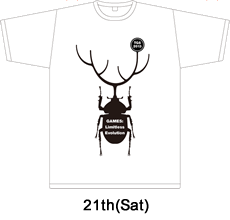
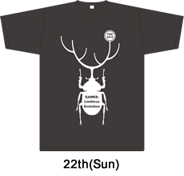

Benefit 1: Original T-shirt
Ticket holder gets TGS2013 SUPPORTERS CLUB original desined shirt!
Choose your shirt size at the purchase of ticket.(size=S, M, L, XL)
Size(length, width) *unite:cm
S(65, 47.5) M(68, 50) L(71, 52.5) XL(74, 55)

ŶHere is ths T-shirt image. Please note that the actual color may differ slightly from the pictures shown.
Benefit 2: Original Pin Badge
Ticket holder gets TGS2013 SUPPORTERS CLUB original desined Pin Badge!
ŶOrignal Pin Badge(image)
Benefit 3: Priority Entrance
Ticket holder gets a Priority Entrance than other general public entrance from the door open until in a given time(30min at maximum).
"TGS2013 SUPPORTERS CLUB Premium Ticket" exclusive zone will be set in admission wait line area(near by West Parking space of Hall 2 North side) from the time of first train at JR Kaihin Makuhari Station. Premium Ticket holders please use this exclusive entrance.
[Notice]
*Special Goods(T-shirt, Pin Badge) will be exchanged with exchange ticket at the entrance.
*T-shirt color and design is different for each event date 21th and 22th.
*No exchange or refund of T-shirt and Pin Badge. Please review your size selection before submit an order.
*Priority Entrance starts at the time of the first train at JR Kaihin Makuhari Station. Please follow a guideboard at Makuhari Messe and event staff's instruction to get on the line of exclusive entrance.
*Priority Entrance exclusive zone will be taken away based on the set time by event organizer. After the take away, every visitor will need to use the general public entrance. To pick up the benefit items (T-shirt, pin) after dismantling the Pick-up Booth after the designated time, it will be available at Information Counter (Location: 2nd Floor Concourse, In front of Hall 5). Please be noted that the pick up will only be limited through on the day.
*Priority Entrance is only available for valid ticket. The 21th ticket cannot be used on the 22th. The 22th ticket cannot be used on the 21th. Please confirm the valid date on your ticket.
*Priority Entrance is only available in the exclusive zone near by West Parking space of Hall 2 North side. No Priority Entrance at other entrance.
*Please make sure your ticket has a barcode printed clearly and do not make a fold or mess on barcode. It may cause a problem with scanning the barcode smoothly.
*To get special benefits needs this ticket even students under primary school age (except infants).